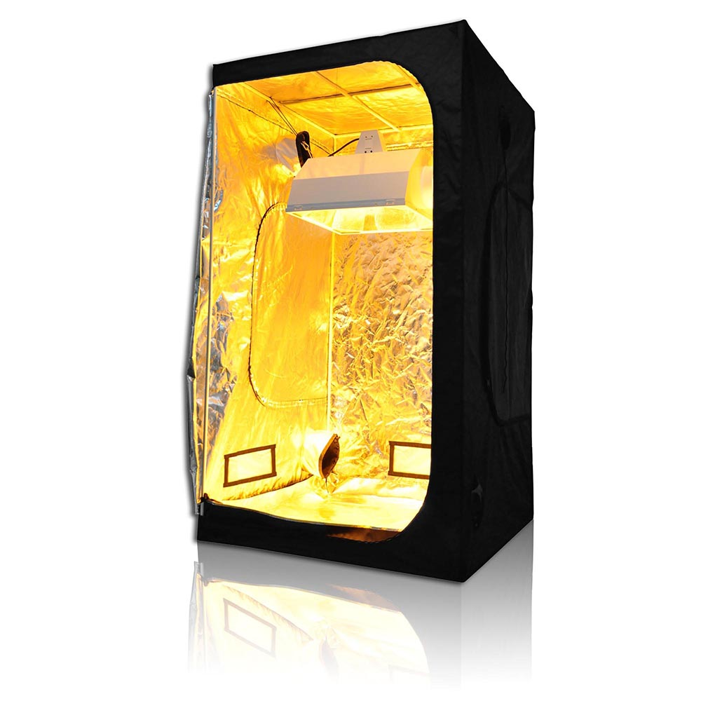

<html>
        <link href="https://fonts.googleapis.com/css?family=Lobster" rel="stylesheet" type="text/css">
  <style>
      .thick-yellow-border {
          border-color: rgb(83, 209, 150);
          border-width: 10px;
          border-style: solid;
          border-radius: 50%;
      }
  </style>  
 
 <main>
    <head><title>Tent Tracker</title></head>
        
    <h1 style="color: darkolivegreen; font-family: Lobster">Tent 1</h1>
        <ul>
                <li>Cucumbers(variety/harvest)</li>
                <li>Beans(variety/harvest)</li>
                <li>Lettuce(Variety/harvest/tth)</li>
                <li>Tomatoes(Variety/harvest/size)</li>
                <li>Herbs(Variety/storage)</li>
        </ul>

        <br><br><br><br>
        
    <h1 style="color:darkolivegreen; font-family: Lobster">Tent 2</h1>

    <ul>
            <li>Cucumbers(variety/harvest)</li>
            <li>Beans(variety/harvest)</li>
            <li>Lettuce(Variety/harvest/tth)</li>
            <li>Tomatoes(Variety/harvest/size)</li>
            <li>Herbs(Variety/storage)</li>
        </ul>    
  </main>
</html>

